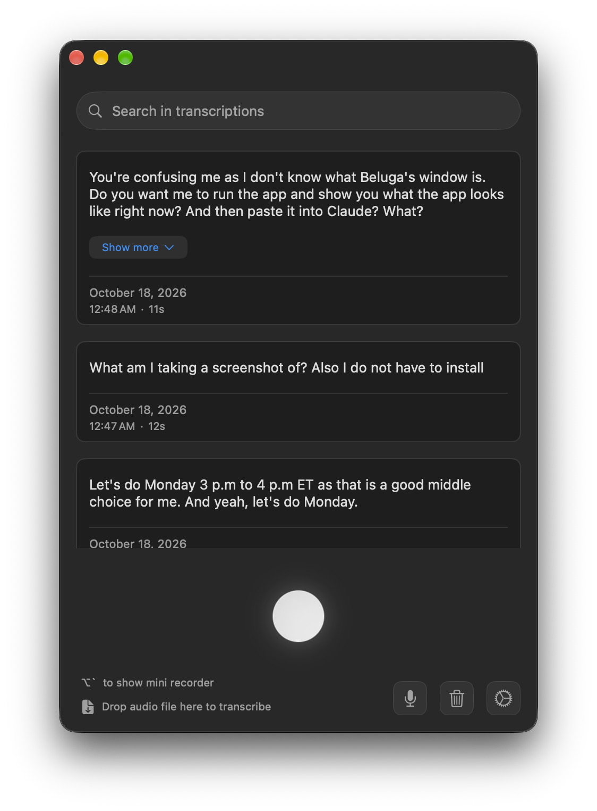

Beluga Redesign Board
Phase 6. Everything is a mockup drawn from the proposed rules, not from the real app: real desktops have text and windows behind the see-through surfaces, and macOS renders the blur slightly differently. Main window mocks use the default Translucent 80% over a backdrop. Settings and Appearance mocks are opaque. Annotate anything: sizes, colors, spacing, wording.
Decided already: Settings becomes its own opaque window (about 820x600, sidebar 190pt), six sections, dark direction approved (blue-gray cards lighter than the window, #4A9AD4 for text-sized accents, #2F7FB8 for fills), no Appearance mode switch, no card style picker. Locked: dark palette is Blue-gray. Open: approval of the combined main-window layout below.
1. Today
Dark is your real screenshot. Light is recreated from ThemePalette (white cards, #F2F5FA panels). In dark, the near-black cards and gray controls come from NSColor system colors that ignore the window tint, which is the clash.

2. Palette light approved, dark locked: Blue-gray
Rules, not fixed values: the card, panel and border are derived from whatever window color is set, so a custom window color still gets matching cards. These are the defaults. Contrast ratios are computed live from the hex values.
Do cards still separate from the window at 60% Translucent?
Worst case: tint strength at the 60% minimum over a high-contrast backdrop (grid lines and a plain black or white field). Cards are 92% opaque over the window so text stays readable. Judge by eye whether the card edge still reads without the border.
3. Main window layout: latest pinned, journal below
E and D combined. The latest recording is pinned at the top (large text, prominent Copy, its other actions beside it, 1pt border). Everything older is the journal below it under Today, Yesterday and full dates, with the latest never repeated. D's slim top bar (search icon that expands into a field), D's empty state and the bottom row are kept. Drawn in light and dark (Blue-gray), first Translucent 80% over a neutral gray desktop, then Solid. Each set shows the list with one row hovered, the empty state, and search expanded.
Matches today's app (checked against RecordingRow and TranscriptionView): the row actions are exactly play or stop (accent colored, red while playing), copy ("Copy entire text"), regenerate and delete, in that order, all secondary gray except play. In list rows they appear on hover, as today. Text is limited to 3 lines, and "Show more" or "Show less" appears only when the text is over 150 characters. Expanded text scrolls at 200pt. Search highlighting is unchanged. One deliberate difference: the pinned latest card shows its four actions all the time instead of on hover, because it is the primary item and Copy is its main button. Say if you want them hover-only there too.
4. Settings window approved
Its own opaque window, opened with Cmd-, and the existing .openSettings notification. Six sections, selected item uses the accent fill. Vocabulary and AI Cleanup stay adjacent. Clipboard & Paste moves into General; Advanced becomes a disclosure under Transcription. The main window never shares translucency with it (match by window identifier).
5. Appearance tab with Cards approved
New Cards section between Accent and Window: Match window (default), a few swatches, custom picker, Reset, and a live preview of a history card, the search bar and a button on the window color. Indicator and Accent sections are collapsed here because they don't change.
6. Empty state, shimmer and loading overlay approved
These move onto the theme surfaces. The loading overlay stops being flat black 30% and uses a tinted scrim with a card holding the spinner and text. (Drawn in the previous card style; they take whatever layout is chosen.)